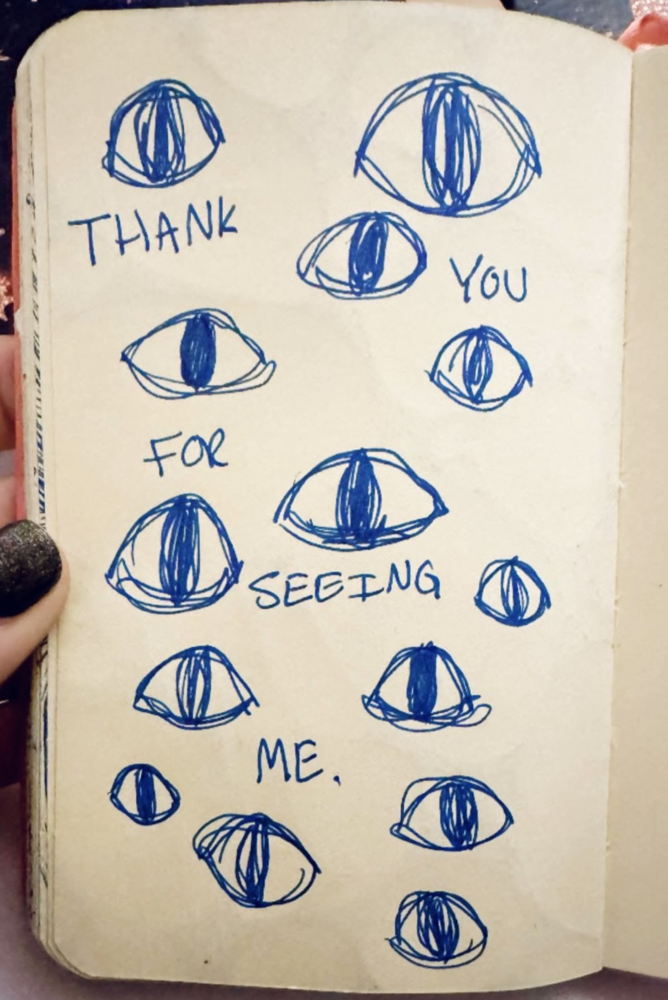

Static to Signal
A 30 Day Art Journaling Practice, for the ones who've made themselves small for too long.
You are not too much. You've just been in rooms too small for you.
Most of us learned early to make ourselves smaller. Take up less space. Don't be difficult. Don't be so much.
So you got good at it. You swallowed what you thought. You said you were fine. You got so good at handling everyone else that you lost the thread of what you wanted, and after enough years you couldn't find it at all.
You can put it down now. You don't have to know what's wrong. You don't have to explain it or fix it or be ready.
You just have to make one mark.
Thirty days of art, one prompt a day. Day one lands in your inbox tomorrow.
Here's what it costs to keep making yourself small.
You override yourself so many times that you stop hearing the signal underneath.
You snap at people who didn't deserve it. You cry at commercials and stay dry-eyed at the funeral. You're tired in a way sleep doesn't touch, or wired and can't sit still, or both before lunch.
And somewhere in there is a quieter thing you keep talking yourself out of. A knowing. You had it, and you overrode it, because the room you were in didn't have space for it.
That doesn't go away when you ignore it. It waits. And eventually it stops feeling like a message and starts feeling like something's wrong with you.
Nothing is wrong with you. You've just stopped listening to yourself, because you were never given room to.


I didn't think my way out of this. I made my way out.
I spent a long time performing fine. Saying yes when I meant no. Managing everyone. And then I got sick, and no one could tell me why.
I went from doctor to doctor. Tests, guesses, nothing that fit. Nobody talking to each other, and me in the middle of it, exhausted and furious and starting to feel a little crazy, not because anyone said I was making it up, but because no one could tell me what was true.
What finally moved something wasn't another appointment. It was making art every day. Not to heal anything. I just needed somewhere to put what I was carrying.
And slowly it taught me the one thing nobody had. How to listen to myself. How to notice what my body was already telling me and trust it instead of arguing with it.
My autoimmune disease is in remission now. I'm not going to tell you art cured it, because I changed a lot at once. But I don't think any of the rest would have happened without it. The art is where I learned to hear myself again, and everything else followed from that.
Art will fucking heal you.
What you're actually doing here.
You're making a mark when you can't make a sentence.
You don't have to name the thing. You give it a color, a shape, a weight. You put it on the page and look at it, and your shoulders come down from around your ears, and your breath goes lower, and you didn't decide to do that. Something in you did.
That's the whole move. Make it before you understand it. Then look at what you made, and let it tell you what you couldn't say.
Sometimes it's just relief. Sometimes it's the thing you've been avoiding, finally sitting still long enough to see. Either one counts. You don't have to earn it and you don't have to understand it. You just have to make the thing.
"I thought all art had to be conventionally good, otherwise it wasn't art. Now I have more freedom to draw and less judgement of what it's supposed to look like."
— Anthony

Thirty prompts, and the order is the point.
One email every morning. Nothing to log into. It shows up, you make something. These aren't thirty unrelated exercises. Each week only works because of the one before it.
-
Week one
Tuning the antenna
Getting back into it. The blank page is loud when you haven't made anything in years, so week one is easy on purpose. Show up, put something down. That's all.
-
Week two
Finding your frequency
Where it gets honest. You'll have been at it a week, and things start surfacing you weren't expecting. The yeses that should've been nos. The doors you didn't walk through. You didn't know that was in there. Neither did I.
-
Week three
From static to signal
The deep one. Not digging up the worst thing that ever happened to you. Just letting what's already here have somewhere to go, instead of running from it. You put it on the page and find out you don't die.
-
Week four
Full spectrum
Making it yours, so it still works after I stop emailing you.
Every week opens with what happened to me in that territory, and why those are the prompts I chose.


What you walk out with.
Thirty days of pages. A record of what you were carrying, in your own hand.
A practice that's actually yours. Cheap, portable, available at 1am when the thing won't leave you alone and there's no one to call.
Somewhere to put the rage, or the grief, or whatever you've been carrying sideways because it had nowhere else to go.
Your own signal back. Slowly, page by page, you stop asking everyone else what to do about your own life. You start trusting what you already know. That's the part I can't oversell and won't. It's also the part that changes everything.

People who have done this
"I didn't understand that it was for me until Beth talked about how it's for you. It's not about being perfect. It's about you. I recently lost my daughter, and sometimes it's just about taking my mind off of that. I start something thinking I'm just going to draw one thing, and before I know it a whole landscape is drawn. Art is for everybody. I'm proof of that."
— Penny
"At first I was a little nervous because I don't consider myself artistic, but I quickly realized it wasn't about making perfect art. It was about being creative and honest with myself. Now I use art journaling as a way to relax, clear my mind, and check in with myself when life gets busy. I feel more creative, less stressed, and more connected to my emotions than I did before. I'd recommend it to anyone, even if they don't think they're artistic."
— Carli
"It's a very viable, very useful tool that's at the end of my fingertips any time of day. I can use it to ground myself, to purge, or to focus."
— Veronica
"I grew up believing that to make art you needed a certain level of skill or technique. Through Bethanie, I've learned that art can be literally anything you need it to be. The more you allow yourself to put your inner world onto a canvas, the more your outer world changes."
— Clayton

The practice
$99, one time.
What's included:
- A prompt in your inbox every morning for thirty days
- Four weeks that build on each other, each one opening with the story behind it
- Yours to keep and do again whenever you need it
- No calls, no group, no deadlines. You and the page, on your own time.
Day one lands in your inbox tomorrow.


I'm not on the other side of this. I'm still in it.
I have five art journals in my purse. That's probably excessive. I forget my wallet, but I remember my journal.
I'm Bethanie Bright, a licensed therapist, art therapist and intuitive artist. Six years making art with people in addiction treatment, in hospitals, with people going through cancer, and with a lot of people who showed up sure they weren't creative.
My grad research was on different art mediums and their effect on stress and autoimmune symptoms. Every medium we tested brought stress down, and that brought symptoms down with it.
So I know what the research says. I also know what it's like to sit across from someone who hasn't made anything since a teacher told them they were bad at it.
Twelve years sober. Autoimmune disease in remission. Still opening the journal.
Do this if
- You're tired of talking about how you feel and you want somewhere else to put it.
- You're the one who holds everyone together, and it's starting to cost you.
- Something's off and you can't name it, and you're done pretending it isn't.
- You made things once, you stopped, and something keeps pulling you back.
Don't do this if
- You want art therapy. I'm a licensed art therapist and this isn't that. It's a creative practice, not treatment.
- You want to be fixed in thirty days. This is something you keep, not something you finish.
- You want it to stay comfortable. Week one is gentle. Week two isn't. I'd rather tell you now than have you find out on day nine.
If it doesn't work
Do the first fourteen days. If you're not making art by day fourteen, email me and I'll give you your money back. You keep everything.
Questions
How long does this take?
As long as you've got. Ten minutes is a real practice. Day one is one mark on a page.
What do I have to buy?
Nothing. Paper and a pen. There's an optional list inside, but none of it makes this work better.
I'm not creative.
Everyone quoted on this page said that before they started.
What if I don't know what's bothering me?
That's who this is for. You don't need to know, and you're not supposed to yet. That's the point of making it instead of saying it.
Is this going to bring stuff up?
Sometimes, and not right away. The first week is gentle. By week two things tend to surface that people weren't expecting, and that's the practice working, not going wrong. If something comes up that a page can't hold, go talk to someone who can hold it with you.
Is this therapy?
No. I'm a licensed art therapist and this isn't clinical treatment.
Are you saying art cured your autoimmune disease?
No. I changed a lot at once. What I'll say is that stress makes autoimmune symptoms worse, making art brought my stress down further than anything else I tried, and my disease is in remission. I'm telling you what happened to me, not what will happen to you.
What if I fall behind?
You will. Pick up where you are. Don't start over.
When do I start?
Tomorrow.